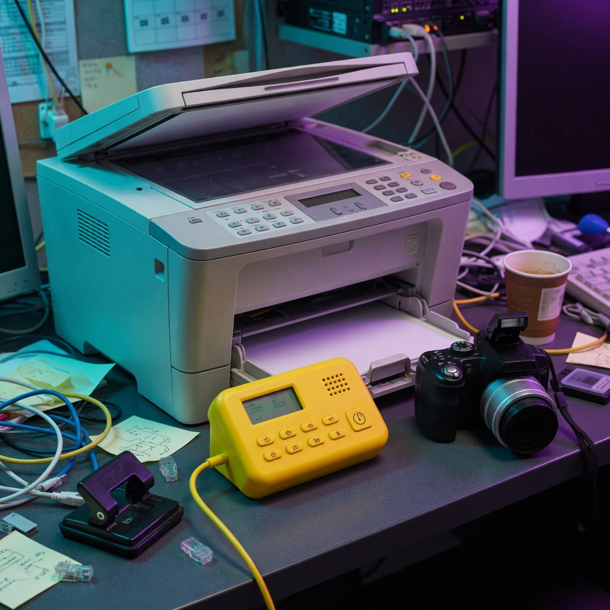

Technical Support
🇿🇦 Sede: Sudafrica
Esperienza Professionale in Sudafrica – Sony Vaio & Kodak
Italian Technical Support Agent – Sony Vaio / Kodak
- Supporto tecnico professionale per clienti italiani
- Troubleshooting avanzato per notebook Sony Vaio
- Assistenza tecnica per stampanti Kodak, fotocamere digitali, scanner
- Diagnosi problemi hardware e software
- Gestione escalation tecniche
- Apertura ticket e coordinamento con ingegneri Kodak
- Invio ingegneri sul campo per riparazioni plotter e stampanti professionali
- Supporto via telefono, email e sistemi CRM
- Rispetto SLA e standard operativi
- Documentazione dettagliata dei casi tecnici
Nota: questa esperienza non riguarda il settore hospitality, ma il supporto tecnico B2B per clienti italiani.
Scopri di più →